NAIA : Novel AI Automation Tool + Danbooru Prompt Selector
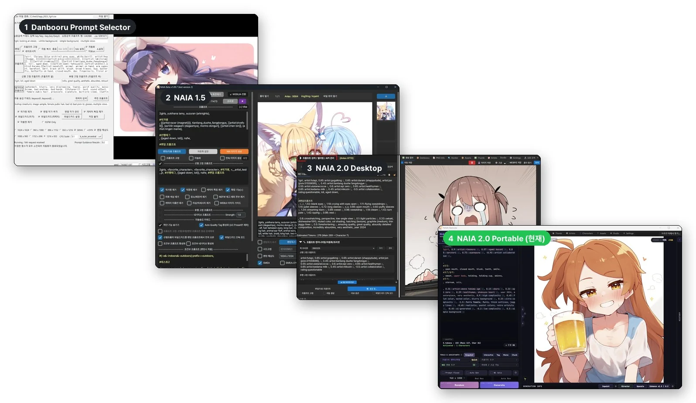
- Danbooru Prompt Selector (2023) : https://arca.live/b/aiart/94194487 - EOL/API DEAD
- NAIA 1.5 EOS (2024) : https://arca.live/b/aiart/175828559 - EOS
- NAIA 2.0 Desktop (2025) : https://arca.live/b/aiart/146196193 - EOS
- NAIA 2.0 Portable (현재) : https://github.com/DNT-LAB/NAIA2.0/releases
NAIA는 모든 버전이 완전한 오픈소스 프로그램입니다. NAIA 2.0 Portable을 제외한 Tool은 지원 종료 상태이므로, 사용하실 분들은 코드 및 소스를 내려받은 뒤 Codex, Claude, Antigravity, Grok 등을 이용하여 개인화 하셔야 합니다.
* EOL : End-Of-Life (종료 - 자연사), * EOS : End-Of-Support (지원 종료)
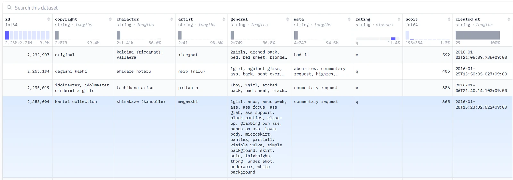
NAIA는 2023년, Stable Diffusion 1.5(SD1.5)와 NovelAI V2를 쓰던 시절에 이미 400만 건 넘게 쌓여 있던 Danbooru 게시물의 태그 인덱스로 이미지 생성을 자동화하려는 프로젝트에서 시작되었습니다.
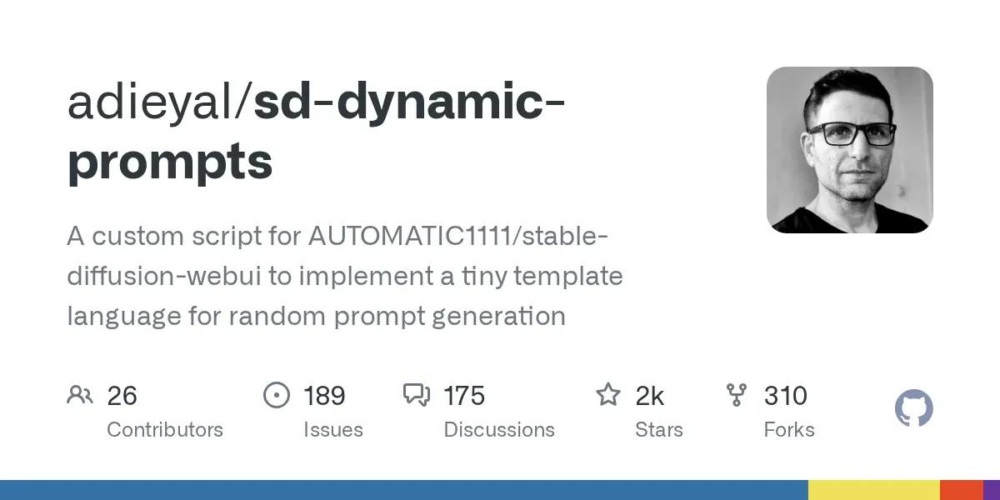
당시에도 Automatic1111의 WEBUI에서 시작된 Dynamic Prompts와 Wildcards를 이용한 이미지 생성 자동화 방법이 존재했지만, 지금 와서 이야기하자면 당시 사용자들의 와일드카드 작성 방식은 너무 허술했습니다.
기본적으로 : Stable Diffusion 및 NAI의 태그 학습은 Danbooru 데이터셋을 기반으로 진행되었습니다.
- 그렇다는 것은 각 태그간에 의존성(Dependencies)과 관계성(Relationship)이 생긴다는 의미가 됩니다.
- 와일드카드는 이러한 의존성이나 관계성을 고려하지 않고 무작위 문자열을 주입합니다. T2I에서 이미 Input 품질이 낮으니 Output 품질이 좋을 수가 없습니다. (창의성은 더 뛰어납니다.)
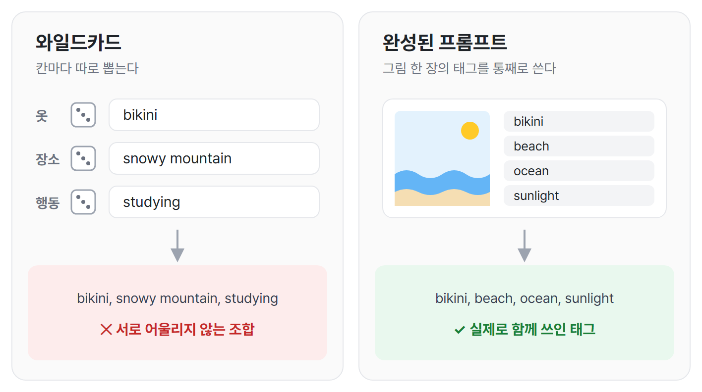
물론 모델 성능이 좋아진 지금은 적당히 넣어도 볼만한 이미지가 생성되긴 합니다만, 당시에는 그랬다고 생각하시면 될 것 같습니다. 이러한 문제가 있으니 당연히 사람들이 생각 한 것은 wildcards 안에서 wildcard를 호출하는 조건 방식의 와일드카드 호출이었습니다.
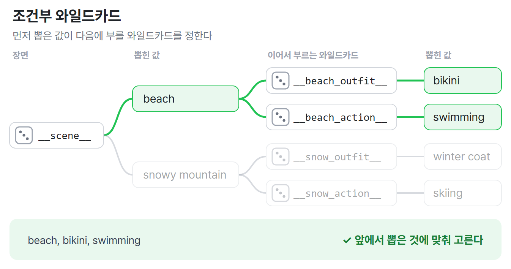
이 방식에서는 당연히 의존성 문제가 해소됩니다. 사전에 장소가 정의되고, 장소에 맞는 의상이 결정되며, 의상에 맞는 행위가 결정됩니다.
그러나:
- 와일드카드의 관리 구조는 복잡해집니다: 와일드카드의 수는 구성하고자 하는 Scene의 조합에 따라 곱으로 늘어납니다. 배경 (10) -> 의상 (10*20) -> 자세 (10*20*30) -> 이미지 구도 -> ...
- 이 방식으로 나올 수 있는 프롬프트 조합은 처음으로 호출되는 와일드카드에 의해 결정되는 단방향 트리 구조 (위 이미지 참조)입니다. 즉, 생성 결과는 통상적으로 와일드카드의 작성자가 떠올릴 수 있는 뻔한 조합의 결과입니다.
- 2개 이상의 조건부 와일드카드를 결합하고자 하는 경우 개별 태그간의 관계성을 고려해야 하는 복잡한 문제가 됩니다. 이 문제를 해결 할 수 있도록 WEBUI Extension이었던 Dynamic Prompts에는 '변수(Variables) 할당' 개념이 존재했습니다. ${season=!__season__} ->{% if season == "winter" %} … {% endif %} ... 이건 프로그래밍에 가까워서 실제로 쓰는 사람은 많지 않았습니다. (이걸 활용할 수 있으면 그냥 파이썬 스크립트로 작성하면 되었으니까요)
Solution : 단부루를 통째로 재사용하자
반면, NAIA는 현재(2026-11-07) 기준 약 900만 개의 완성된 Danbooru 프롬프트를 내장하고 있습니다. 와일드카드 파일을 하나도 만들지 않아도, 조건만 고르면 실제로 그려진 그림의 태그 조합을 바로 꺼내 쓸 수 있습니다.
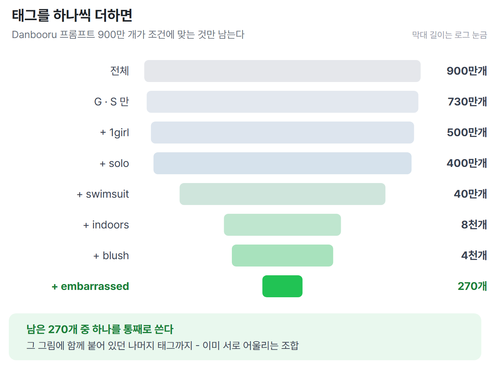
여기에는 저품질 조합*도 섞여 있지만 아래처럼 조건을 하나씩 더하면 원하는 것만 남길 수 있고, 이렇게 좁혀진 270개의 프롬프트 조합은 이미 구도가 완성된 프롬프트로, 아무거나 하나 꺼내 쓰면 이미 태그간의 관계성 및 의존성이 전부 맞춰져있는 상태입니다. 사람의 손으로 말이죠.
- 저품질 조합이란 태그 구성이 느슨하게 입력된 태그 조합을 의미합니다. 예: 1girl, solo, swimsuit, indoors, blush, embarrassed 만 입력되고 추가 프롬프트가 없는 경우
Hit a wall : 태그에 정보량이 너무 많다
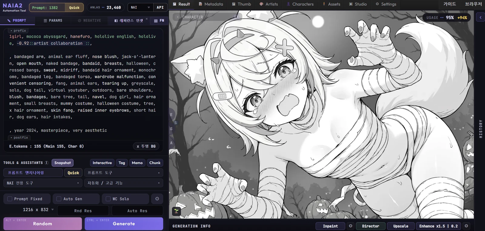
그러나 여기에는 몇 가지 문제가 있습니다: Danbooru 태그는 그림 한 장을 있는 그대로 기록합니다. 무엇을 그렸는지뿐 아니라 어떻게 그렸는지, 누구를 누가 그렸는지까지 모두 들어 있습니다. 그래서 통째로 꺼내 쓰면 원하지 않는 정보까지 함께 딸려 옵니다.
- 그림의 형식: greyscale, monochrome, multiple views 같은 태그가 섞여 있으면 흑백 그림이나 여러 컷으로 나뉜 그림이 나옵니다.
- 원하지 않는 특징: furry female, black hair, large breasts 처럼 원래 그림에는 맞지만 내가 원하지 않는 체형이나 특징이 따라올 수 있습니다.
- 고유명사: 캐릭터 이름이나 작가 태그, 작품명 태그가 들어 있으면 원하지 않는 캐릭터나 화풍이 끼어듭니다.
Prompt Engineering
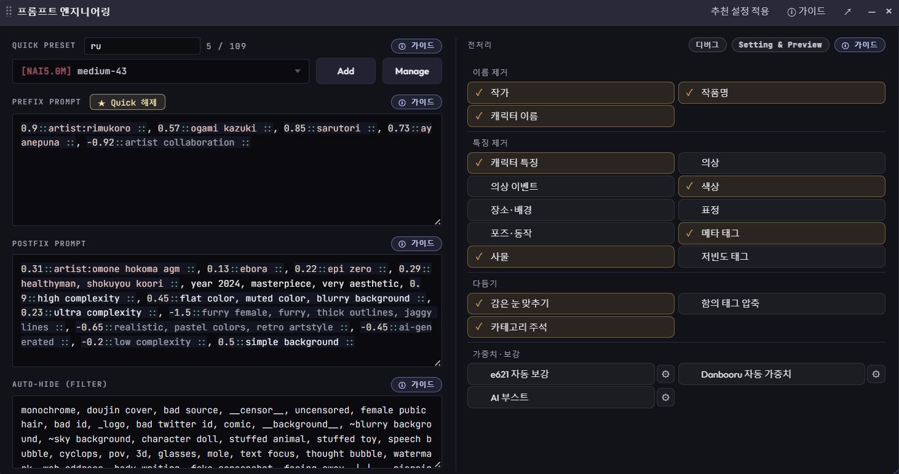
NAIA는 이 문제를 프롬프트 엔지니어링(PE)으로 해소합니다. 꺼내 온 프롬프트를 그대로 쓰지 않고, 생성 직전에 한 번 거릅니다.
- 특징 제거: 태그를 그룹 단위로 뺍니다. 켠 항목은 프롬프트에서 빠집니다.
- 선행 / 후행 고정 프롬프트: 작가 · 품질 태그처럼 늘 쓰는 것은 앞뒤에 고정합니다.
- Auto-Hide: 그룹은 살려 두고, 싫은 태그만 낱개로 뺍니다.
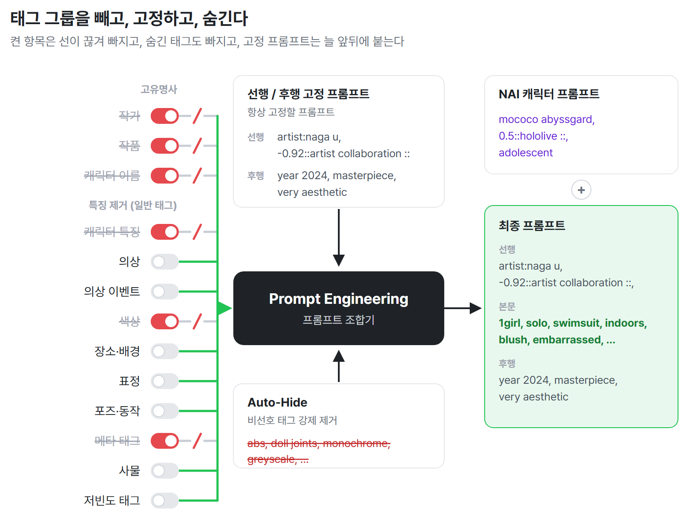
예를 들어 고유명사 · 캐릭터 특징을 빼면, 원본 프롬프트에서 '누구인지' 에 해당하는 태그만 빠지고 의상 · 포즈 · 표정은 그대로 남습니다. 그 빈자리에 NAI 캐릭터 프롬프트로 내 선호 캐릭터를 넣으면 됩니다:
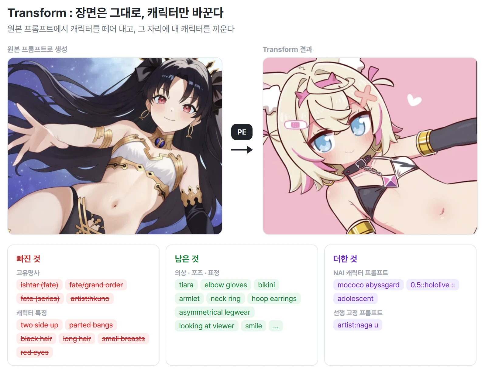
결론적으로 랜덤 프롬프트 속에 내재된 장면 및 구도는 유지되고 캐릭터만 바뀌게 됩니다. 그래서 900만 개 이상의 프롬프트 하나하나를 내가 선호하는 캐릭터의 새 장면으로 재사용 할 수 있으며, 와일드카드 처럼 무작위로 자동화 할 수 있습니다.
NAIA에서 사용자의 역할
앞의 과정을 거치면, 사용자가 결정할 것은 네 가지로 줄어듭니다.
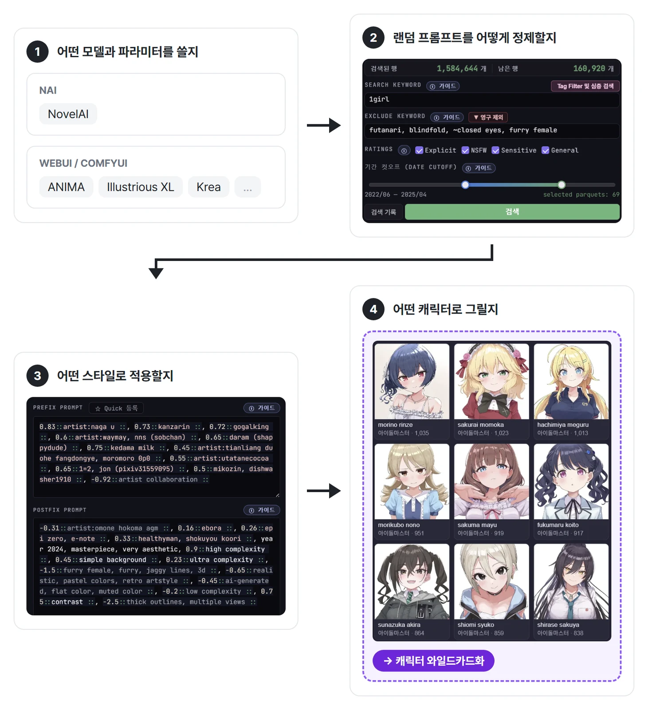
- 모델과 파라미터: 어디서 그릴지 고릅니다. NAI 는 NovelAI 를, WEBUI / ComfyUI 는 ANIMA · Illustrious XL · Krea 같은 로컬 모델을 씁니다. 해상도 · 스텝 · CFG 같은 생성 설정도 여기서 정합니다.
- 랜덤 프롬프트 정제: 900만 개 중 무엇을 꺼내 쓸지 정합니다. 검색 키워드로 좁히고, 제외 키워드 · 등급 · 기간으로 거릅니다. 꺼낸 뒤에는 앞에서 본 특징 제거 · Auto-Hide 가 한 번 더 거릅니다.
- 스타일: 선행 / 후행 고정 프롬프트에 작가 태그와 품질 태그를 고정합니다.
- 캐릭터: 그릴 캐릭터를 고르거나 나만의 캐릭터를 할당하고, 와일드카드로 관리합니다.
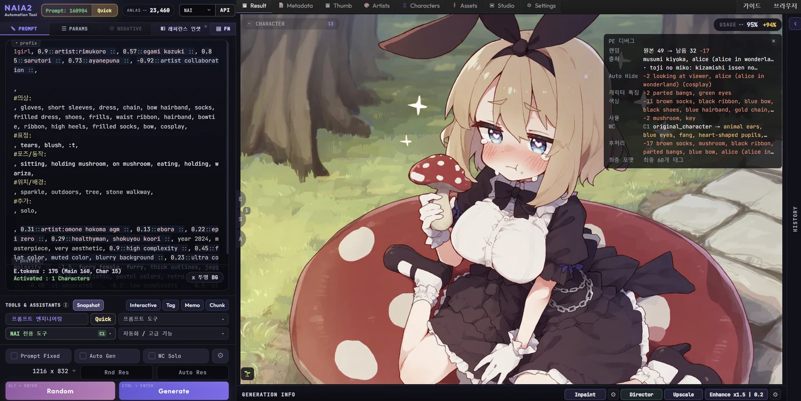
NAIA의 단점과 한계 : 자동화의 늪에 빠지다
NAIA는 사용자의 창의력을 저해하고 AI Slop을 생성하는 데 특화되어 있습니다. NAIA를 딥하게 활용하면 활용할수록 내 아이디어로 장면을 짜는 대신 더 강한 자동화에 기대게 됩니다.
- 장면을 사용자가 고르지 않습니다: 무엇이 나올지는 랜덤이 정하고, 사용자는 많이 뽑아서 마음에 드는 것을 고릅니다. 창작자가 아니라 철저히 소비하는 사람의 자리에 서게 됩니다. 유튜브 쇼츠를 보는 것과 다르지 않습니다.
- 배워야 할 것이 늘어납니다: 프롬프트 대신 자동화 규칙과 필터를 만지게 됩니다. 그러려면 NAIA가 어떻게 돌아가는지 이해해야 하고, 필요하면 코드를 직접 (물론 당신이 아니라 당신이 사용하는 LLM 서비스의 에이전트가) 고칠 줄도 알아야 합니다.
- 이미 누군가 그린 장면만 나옵니다: 조건부 프롬프트, AI Boost, E621 Auto Boost, Danbooru 자동 가중치로 결과를 다듬을 수는 있습니다. 하지만 사람의 상상력과 자연어에서 나오는 창의성은 NAIA가 대신할 수 없는 영역입니다.
그럼에도 자동화는 계속된다
자동화의 늪에 빠지건 말건 AI 이미지를 생성하는 사람들은 결국 자동화의 품을 찾게 되어 있습니다.
부유한 사용자는 자신만을 위한 환경과 시스템을 만들 것입니다.
그렇지 않은 사용자들은 AI 이미지 생성을 위한 프롬프트를 짜느라 머리를 쓸 시간에 배우고, 일하고, 자야 합니다.
자동화 생성에 활용되는 것이 와일드카드가 될 수도 있고, 그저 미리 만들어놓은 프롬프트를 반복 생성하는 것일 수도 있고, NAIA처럼 랜덤 프롬프트를 활용하거나, 혹은 LLM을 이용하여 자동화 할 수 있습니다.
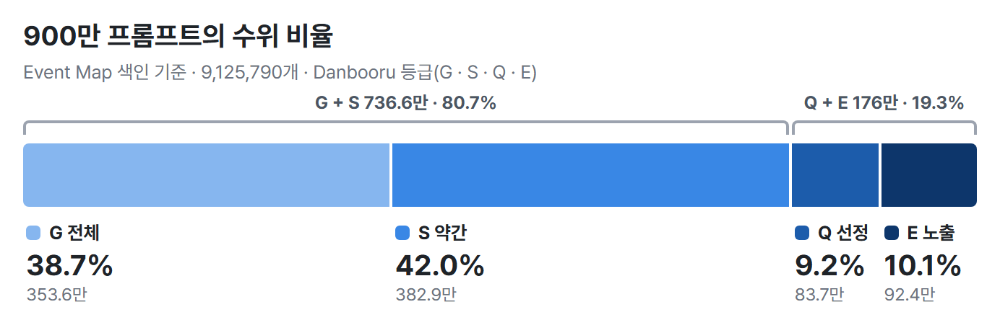
시간이 없는 사용자에게 Danbooru에서 사람의 수작업을 통해 정제된 프롬프트 세트는 너무 달콤합니다.
거기에 대부분의 LLM 서비스가 연령 게이트에 걸리는 프롬프트 작성 혹은 선정적인 프롬프트 작성을 거절하지만, NAIA에 내장된 Danbooru 데이터 세트에는 Q · E 등급 프롬프트만 176만 개가 있습니다. 이는 고성능 GPU도, 외부 LLM 서비스도 요구하지 않는 사용자 자산입니다.
단순하게 이미지를 잔뜩 뽑아놓고 살펴보는 것도 중요하지만 NAIA를 아이디어 뱅크로 사용할 수도 있고, 태그 조합의 학습 목적으로 사용할 수도 있으며, 심지어 로컬 AI 모델의 LoRA 학습을 위한 발사대로도 사용될 수 있습니다.
창의성과 자동화의 균형을 맞추려는 NAIA의 노력
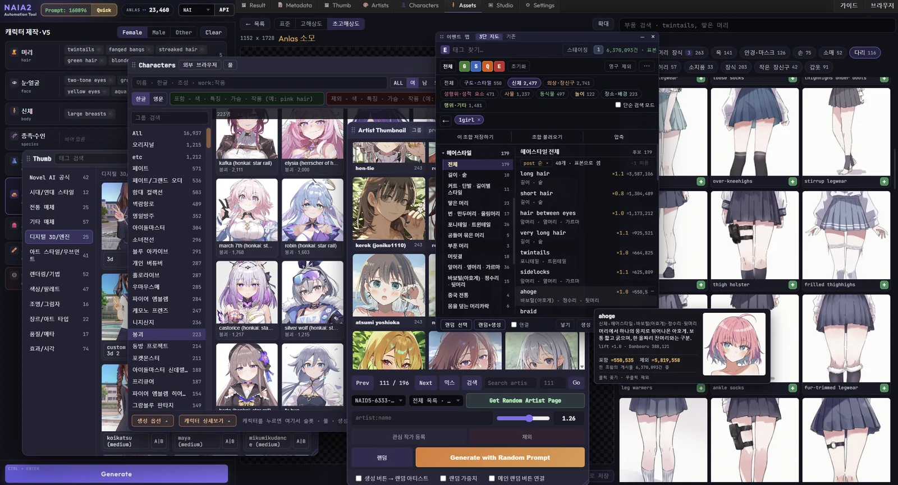
NAIA는 기본적으로 랜덤 프롬프트 발사대의 역할을 하지만, 창의적인 이미지 생성을 목표로 하는 사용자들을 위해 랜덤이 고르던 자리 곳곳에 사용자가 직접 보고 고르는 창과 검색 기능들을 둡니다. 프롬프트를 처음부터 쓰지 않아도, 보기 중에서 고르는 것만으로 장면을 내 쪽으로 끌어올 수 있습니다.
- E621 연구 벤치
- Danbooru 태그 이미지 미리보기
- NAI V5 색인 캐릭터 및 아티스트 썸네일
- 공출현 태그 리스트 맵
- 기타 등등...
NAIA가 제공하는 미리보기 기능들은 추후 섹션에서 추가적으로 소개하겠습니다.
* 이 콘텐츠는 NAIA 내부에서도 제공될 예정입니다.